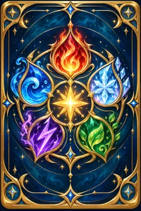
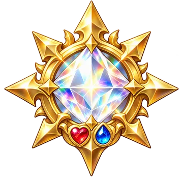

파티 던전
파티원과 함께 입장하고 방을 클리어합니다.


파티원과 함께 입장하고 방을 클리어합니다.

응축된 마력핵을 준비하세요.
| 분배 방식 | 설명 |
|---|---|
| 주사위 | 설정된 최소 등급 이상 장비에 주사위 분배 |
| 무작위 | 무작위 배정 |
| 순서대로 | 순차 배정 |
| 피해 기여도 | 피해 기여에 따른 배정 |
| 파티장 우선 | 파티장 우선 배정 |
파티장이 분배 방식 및 주사위 최소 등급을 설정할 수 있습니다. 기본 주사위 최소 등급은 희귀입니다.
캐릭터를 선택해 거래를 신청하고, 거래창에서 교환할 아이템을 확인합니다.
거래 전 상대 캐릭터와 아이템을 확인하세요. 서버 승인 및 실제 거래 조건은 게임 내 안내를 따릅니다.
게임 상단 랭킹 버튼으로 확인합니다.
| 랭킹 항목 |
|---|
| 최고 데미지 |
| 최대 체력 |
| 최대 마나 |
| 전투력 |
| 사냥 |
| 무한의 탑 |
| 장비 수집 |
| 칭호 |
저장 후 서버 순위에 반영됩니다. 이 홈페이지는 실시간 순위 데이터를 직접 조회하지 않습니다.
달성한 업적의 최고 등급 보너스가 합산됩니다.
| 칭호 계열 | 일반 | 희귀 | 영웅 | 전설 | 신화 | 초월 | 태초 |
|---|---|---|---|---|---|---|---|
| 마법사 | 10 | 30 | 50 | 70 | 90 | 95 | 99 |
| 몬스터 사냥꾼 | 100 | 1000 | 5000 | 10000 | 50000 | 100000 | 500000 |
| 정예 추적자 | 10 | 50 | 100 | 300 | 1000 | 3000 | 10000 |
| 던전 정복자 | 5 | 20 | 50 | 100 | 300 | 500 | 1000 |
| 수집가 | 5 | 10 | 20 | 35 | 50 | 75 | 100 |
| 강화의 장인 | 10 | 50 | 100 | 300 | 1000 | 3000 | 10000 |
| 황금의 탐험가 | 1 | 10 | 30 | 50 | 100 | 300 | 500 |
| 탑의 도전자 | 10 | 25 | 50 | 100 | 200 | 350 | 500 |
| 등급 | 체력 | 마나 | 방어 | 마공 |
|---|---|---|---|---|
| 일반 | 20 | 10 | 2 | 5 |
| 희귀 | 50 | 25 | 5 | 10 |
| 영웅 | 100 | 50 | 10 | 20 |
| 전설 | 200 | 100 | 20 | 40 |
| 신화 | 400 | 200 | 40 | 80 |
| 초월 | 800 | 400 | 80 | 160 |
| 태초 | 1600 | 800 | 160 | 320 |
각 업적의 달성 기준은 레벨, 처치 수, 수집 수, 강화 시도, 황금 던전 완료, 최고 클리어 층수 등입니다. 강화·황금던전 누적은 V55부터 집계합니다.
최대 10,000층 · 매 5층 보스 · 매 10층 강력한 보스
| 층 | 골드 | 마력핵 | 보호석 |
|---|---|---|---|
| 1 | 100,000 | 0 | 0 |
| 5 | 100,000 | 0 | 0 |
| 10 | 1,000,000 | 5 | 0 |
| 20 | 2,000,000 | 5 | 0 |
| 50 | 5,000,000 | 5 | 5 |
| 100 | 10,000,000 | 5 | 10 |
| 500 | 50,000,000 | 5 | 50 |
| 1000 | 100,000,000 | 5 | 100 |
| 10000 | 1,000,000,000 | 5 | 1000 |
층별 보상 함수 기준 예시입니다. 보상 수령 가능 여부 및 재도전 규칙은 게임 내 안내를 확인하세요. 전용 탑 이미지 미제공으로 던전 이미지를 참고용으로 표시합니다.

경험치 100,000당 증표 1개.
Lv.99부터 루미에게 증표 1개로 최대 체력 또는 최대 마나 +10 영구 구매.
K: 스킬창, C: 장비창, I: 가방, P: 파티창 열기·닫기. 칭호 진행도와 장비 착용 표시가 개선되었으며, 랭킹은 칭호 없이 간결하게 표시됩니다. 재접속 시 이전 채팅은 표시하지 않습니다.